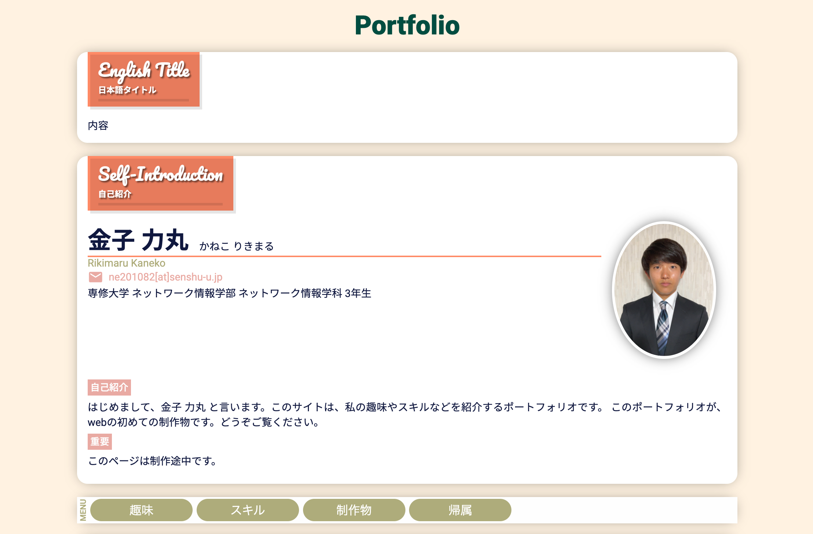

Portfolio
English Title
日本語タイトル
内容
Self-Introduction
自己紹介
金子 力丸
かねこ りきまる
Rikimaru Kaneko
専修大学 ネットワーク情報学部 ネットワーク情報学科 3年生
自己紹介
はじめまして、金子 力丸 と言います。このサイトは、私の趣味やスキルなどを紹介するポートフォリオです。 このポートフォリオが、webの初めての制作物です。どうぞご覧ください。
重要このページは制作途中です。
Hobby
趣味
旅行と写真を撮ることが趣味です。スマートフォンで気軽に撮影したものです。
パノラマ撮影が気に入っています。
静岡県 熱海市 熱海城前

Skill
スキル
 HTML / CSS
1年
HTML / CSS
1年
Web のフロントサイドの言語です。
大学の講義では基礎的な内容の学習だったため、学習サイト等で学び
ポートフォリオサイトを作成しました。
 JavaScript / Node.js
4ヶ月
JavaScript / Node.js
4ヶ月
Web 系で最も有名な言語です。
フロントサイドでは、動きのある動作を作るために使用しました。
Node.js は、大学では学習しなかったため、本や学習サイトで学び
予約サイトのwebサービスの作成に用いました。
 PHP
3ヶ月
PHP
3ヶ月
Web のサーバーサイドの言語です。学習サイトで学び、Laravel
というフレームワークで
データベースを操作する、アプリケーションを制作しました。
MySQL
1年
データベースです。 少しリレーションが必要な
クエリを使用するときに思うようにいかず、苦戦しています。 SQLlite
等の他のデータベースも挑戦しようと思っています。
Python
2年
大学の講義中心に学習しました。 sk-learn
を使った機械学習を行いました。他には、Gurobiで線形計画法を用いて
数理最適化問題を解くなどをしてきました。
また、セキュリティの学習をし、honey potの作成も行いました。
Java
1年
大学の講義で学習しました。
再帰問題などを解きながら基礎的な内容を学びました。
最終的に、複数のクライアントによるチャットアプリを作成しました。
Ruby on rails
1年
大学の講義で学習しました。
Webアプリの開発の学習で基礎から応用まで学び、電話帳やブログ投稿アプリを作成しました。
また、個人で映画の予約サイトを作成しました。
R
6ヶ月
大学の講義で学習しました。
分析学習や、スクレイピング学習を主にしました。
スクレイピング学習では、TwitterのAPIを使い、Twitterからの情報をもとに、
分析を行うなどの学習をしました。
C#
6ヶ月
大学でのテーマ実習という講義で学習しました。
Unityで自作ゲームを作る際にScriptの記述で扱いました。
独特の書き方で慣れるまで時間がかかりました。
Go
6ヶ月
こちらも大学のテーマ実習という講義で学習しました。
Unityのゲームで複数のクライアントによるリアルタイムでのゲームを実装するために
サーバー側の記述に用いました。
Adobe Illustrator
6ヶ月
大学での講義で学習しました。
基礎的な学習から始めて、最終的にA4一枚のレシピ本のデザインを行いました。
講義後もwebサイトでのデザインの作成などを行いました。
My Work
制作物
1. ポートフォリオサイト

現在表示しているサイトです。 学習サイトを参考にしながら、制作しました。 初めて自分の手で Web ページを作成することを知りました。
こだわりのポイント-
配色柔らかい印象を持っていただけるように、ベースとなる色を、 色の参考書から 3 色選択し、使用しました。
-
ナビゲーションスマートフォン等、小さい画面で見たときに、セクションの移動が 簡単にできるように、メニューを上部に固定しました。 スクロールするまでは、ページの一部になるようにする部分に苦戦しました。
-
レスポンシブレイアウト画面幅に応じてレイアウトが変わるようにし、崩れないように細かい部分まで調整しました。
- HTML / CSS
- JavaScript
- Swiper (画像スライドショー)
2. 匿名掲示板
サーバーサイドの練習のために、 誰でも利用可能な掲示板を作成しました。 書き込みをデータベースに保存し、他のユーザーからも閲覧できるようにしました。
こだわりのポイント-
投稿内容自由なニックネームと投稿内容の 2 つだけのシンプルな構成です。
-
コンテナ化Docker で PHP と MySQL を実行できるように構成しました。
-
ログイン機能誰でも削除できてしまうため、ログイン機能やパスワード保護機能で投稿を管理できるようにしたいです。
- HTML / CSS
- PHP
- MySQL
- Docker
3. To Do アプリ

PHP フレームワークの Laravel を使用して To Do アプリを作成しました。 ログイン機能があり、ユーザーごとにタスクを管理できます。 シンプルな Web アプリケーションですが、初期生成されたファイルが多く、大変でした。
使用した言語・ツール等- HTML / CSS
- PHP
- Laravel
- MySQL
- Docker
Licence
帰属
- HTML5 Logo by W3C
- Node.js® Logo by OpenJS Foundation
- PHP Logo by PHP Group
- 写真AC AI人物素材（ベータ版）